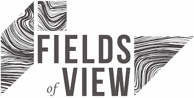

Curricular Toolkit for Cantor's World

UNESCO's first curricular toolkit for a digital learning game.
Description
Cantor’s World is a game, designed to learn about the Inclusive Wealth Index (IWI) and how it complements other indices. In the game, players experiment with policy choices and experience firsthand the tug-of-war between short-term results and long-term sustainability.
This project focused on creating curricular resources to support the adoption of Cantor’s World in by teachers, professors, and policymakers. This includes a detailed 8-part curriculum-guide, a facilitator's guide, and a player's guide.
Files
Updates


Funding and Support


Team Members
- Robin Sharma — Project Coordinator and Program Officer, UNESCO MGIEP
- Anantha Kumar Duraiappah — Director, UNESCO MGIEP
- Nandan Nawn — Professor, TERI School of Advanced Studies
- Bharath Palavalli — Founder, Fieds of View
Publications and Presentations
- Sharma, R. (2018). Cantor’s World: A learning game for understanding inter-linkages among sustainability, well-being and national growth indicators. UNESCO MGIEP Transforming Education Conference for Humanity (TECH), Visakhapatnam, India.
- Sharma, R., Palavalli, B., & Nawn, N. (2018, July). Cantor’s World: Training the Trainers. UNESCO MGIEP, New Delhi. https://mgiep.unesco.org/article/first-training-the-trainers-workshop-on-cantor-s-world (10 participants)